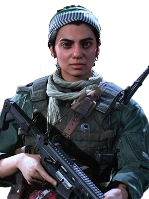

CHARACTER INFORMATION

Years later, Farah would go on to become the leader of the Urzikstan Liberation Force (ULF), a group of over 7,000 volunteer freedom fighters determined to free their country from foreign subjugation. To accomplish their goals, the ULF would often fight alongside and receive support from both the US Central Intelligence Agency and the British Special Air Service; the latter of which would establish a working relationship with Captain John Price.
Farah is a founding member and the commander of the Urzikstan Liberation Force, battling foreign occupation since 2010. She is renowned not only for leading the resistance against enemy troops but for establishing protective units to combat terror groups throughout Urzikstan. Under Farah's leadership, civilian militias play a critical role in the fight to return their subjugated population to sovereignty. Her forces comprise male and female volunteer fighters with a maximum age limit. Farah does not allow those under the age of 15 to take part in frontline fighting, but anyone and everyone are invited to undergo military training and join her reserves.
In 2009, Farah led an escape, fighting alongside a western aide unit. She vowed then to give her life to free her country from subjugation and chaos. When asked if women can be as effective as men in combat, Farah describes the question as sexist and objectifying. Farah wants to give women their rightful place, not only in combat but in a society free from war. For Farah, war is more than the liberation of land. "We are also fighting to free our people from old-fashioned ways."
Impressed by seeing females in combat and leadership roles, wives, mothers, and daughters fight without pay, food or medicine to follow Farah into battle. Farah's modern beliefs have had far-reaching effects, and occupying soldiers often directly hunt and target her. Labeled a terrorist organization by the Russian government for their long-standing resistance, Russian soldiers are ordered to make no distinction between the terror group Al-Qatala and the liberation fighters under Farah's command. AQ terrorists pursue Farah and the ULF with a mandate to kill as well.